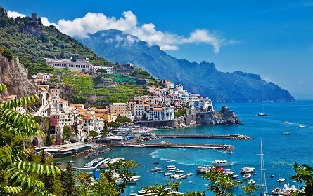
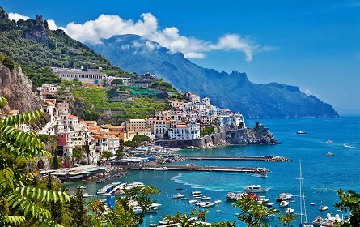
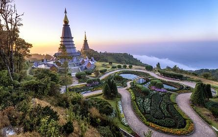
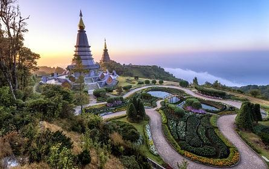

Top 10 Countries for Traveling
Traveling is one of the most enriching experiences that can broaden our horizons, help us learn about
different cultures, and create unforgettable memories. With so many amazing destinations to choose from,
here are ten countries that are worth considering for your next travel adventure:

 



 
